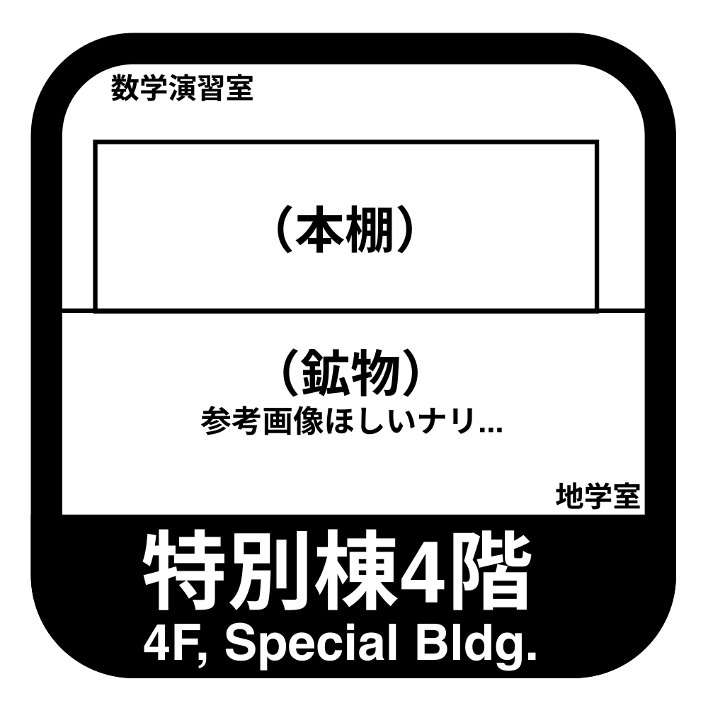

Q04 特別棟4階
\(1,\:\: 2,\:\: 2,\:\: 3,\:\: 3,\:\: 3,\:\:\ 4,\:\: 4,\:\: 4,\:\: 4,\:\: \cdots \)
上の数列は，ある規則に沿って並んでいます。
30番目の数はいくつでしょう。
かんたん
大小2つのサイコロをそれぞれ1回振るとき，出目の積が偶数になる確率を求めなさい。
ただし，
サイコロの出目は同様に確からしいものとする。
2個のさいころを振る問題は \(6\times 6\) の表を使って考えます。
\( \angle \mathrm{C} = 90^{\circ}\) の直角三角形\( \mathrm{ABC}\) がある。
\( \sin{A}=\frac{\sqrt{6}}{3}\) のとき，\( \cos{B}\) を求めよ。
\( \sin A,\, \cos B\) はそれぞれどのような定義であるか考えてみましょう。
\(a > -3\) のとき，\( \displaystyle \frac{a^2+6a+18}{a+3}\) の最小値と，
そのときの \( a\) の値を求めよ。
分子の次数を分母の次数より小さくしたい...
行列 \(A= \begin{pmatrix} 4 & 3 \\ 1 & 2 \\ \end{pmatrix}\) に対して，\( A^2\) を\( pA+qE\, (p,q:\mbox{定数}) \) の形で表せ。
「ケーリー・ハミルトンの定理」
知らないなら諦めよう